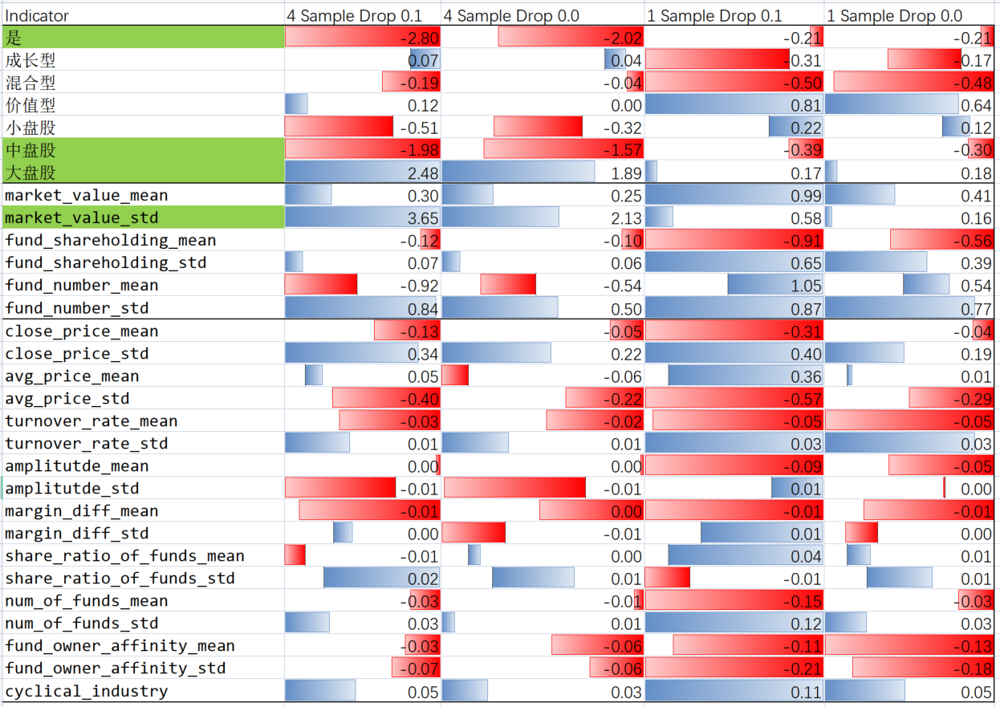

Linear Analysis
Linear Result
Name |
Training Sample |
Training Period |
Quarter of raw data in each sample |
Training Drop point |
Training Label |
Test Indicator Sample |
Test Indicator Period |
Test Label |
Test Drop Point |
Result Dir |
Train Test Shape |
Training Sample.1 |
Month 2 Result |
link |
|---|---|---|---|---|---|---|---|---|---|---|---|---|---|---|
4 Sample Drop 0.1 |
4 |
‘2020-09-30’ ‘2020-12-31’ ‘2021-03-31’ ‘2021-06-30’ |
4 |
0.1 |
2021-07, 2021-08, 2021-09 |
1 |
2020-12-31’ ‘2021-03-31’ ‘2021-06-30’ ‘2021-09-30’ |
2021-10, 2021-11 |
0.15 |
Joyan_4_Sample_Drop_0.1 |
x_train.shape:(833, 30) x_test.shape:(841, 30) y_train.shape:(833,) y_test.shape:(841,) |
833 |
TP:435, FP:397, TN:0, FN:0 |
|
4 Sample Drop 0.0 |
4 |
2020-09-30’ ‘2020-12-31’ ‘2021-03-31’ ‘2021-06-30’ |
4 |
0.0 |
2021-07, 2021-08, 2021-09 |
1 |
2020-12-31’ ‘2021-03-31’ ‘2021-06-30’ ‘2021-09-30’ |
2021-10, 2021-11 |
0.15 |
Joyan_4_Sample_Drop_0.0 |
x_train.shape:(1743, 30) x_test.shape:(841, 30) y_train.shape:(1743,) y_test.shape:(841,) |
1743 |
TP:352, FP:286, TN:0, FN:0 |
|
1 Sample Drop 0.1 |
1 |
2021-06-30’ |
4 |
0.1 |
2021-07, 2021-08, 2021-09 |
1 |
2020-12-31’ ‘2021-03-31’ ‘2021-06-30’ ‘2021-09-30’ |
2021-10, 2021-11 |
0.15 |
Joyan_1_Sample_Drop_0.1 |
x_train.shape:(356, 30) x_test.shape:(841, 30) y_train.shape:(356,) y_test.shape:(841,) |
356 |
TP:16, FP:41, TN:186, FN:320 |
|
1 Sample Drop 0.0 |
1 |
2021-06-30’ |
4 |
0.0 |
2021-07, 2021-08, 2021-09 |
1 |
2020-12-31’ ‘2021-03-31’ ‘2021-06-30’ ‘2021-09-30’ |
2021-10, 2021-11 |
0.15 |
Joyan_1_Sample_Drop_0.0 |
x_train.shape:(588, 30) x_test.shape:(841, 30) y_train.shape:(588,) y_test.shape:(841,) |
588 |
TP:5, FP:27, TN:127, FN:227 |
Linear Weight
